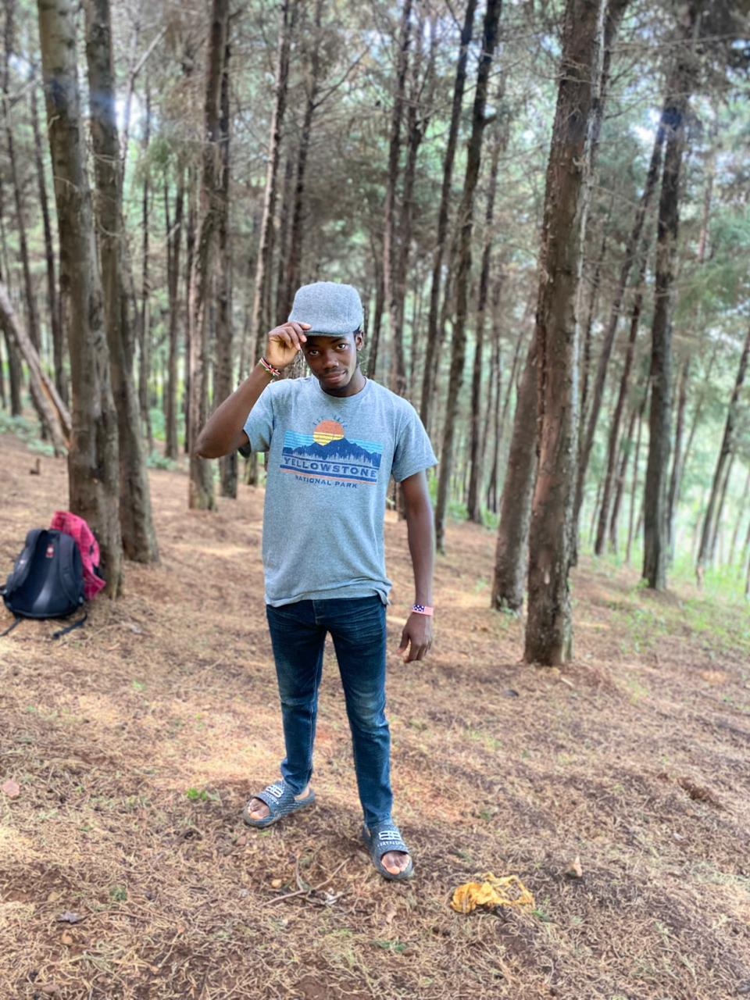

alexmbugua792@gmail.comI am an information technology studentat kisii university with an interest in web development,programming and technology.i am eager to develop my technical skills,gain practical experience and apply my knowledge to real-world projects.i am a motivated learner who enjoys solving problems and exploring new technologies.
To develop myy own website and gain more skills about cybersecurity and other areas of computing .I am t contributeto technology based projects while continously improving my technical skills.
Bachelor in information technology
kisii university,kenya
year 2
Matunda S.A
completed 2023